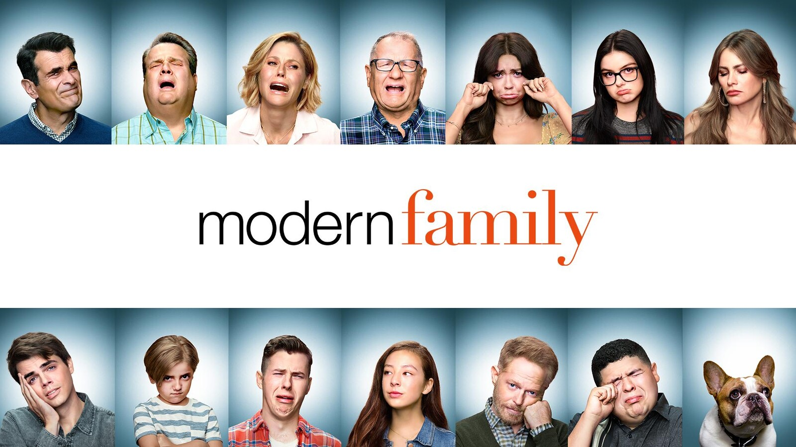

Directed by Steven Levitan and Christopher Lloyd
The series offers an honest, often-hilarious perspective of family life. Parents Phil and Claire yearn for an honest, open relationship with their three kids, but a daughter who is trying to grow up too fast, another who is too smart for her own good, and a rambunctious young son make it challenging. Claire's dad Jay and his Latina wife Gloria are raising two sons together, but people sometimes believe Jay to be Gloria's father. Jay's gay son Mitchell and his partner Cameron have adopted a little Asian girl, completing one big -- straight, gay, multicultural, traditional happy family.
Ed O'Neill

Sofía Vergara

Julie Bowen

Ty Burrell

Jesse Tyler Ferguson

Eric Stonestreet

Despite the seriousness of the central theme, the show is outright hilarious. It is witty—much too witty to understand every joke, every emotion, and every retort in just one watch. The writing is spot on. It allows you to live the characters and fall in love with them one episode at a time. It made me pause the show because I had to laugh so hard. It has also made me pause to make way for a few tears that flowed without announcement or purpose. The families, despite their eccentricities and unconventional ways of being, are ever so relatable in how they love one another. Every day, I learn from this show that the only way to truly love someone is to let them thrive in their own choices.